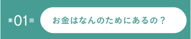
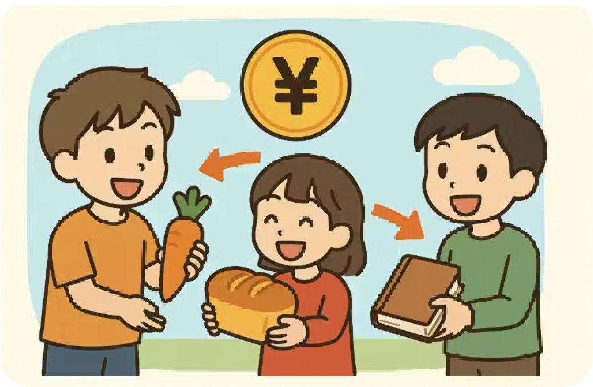
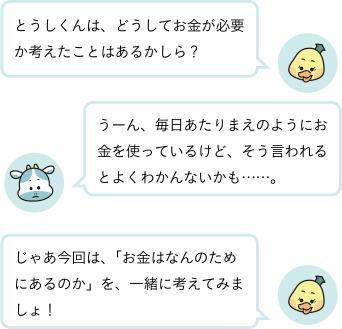
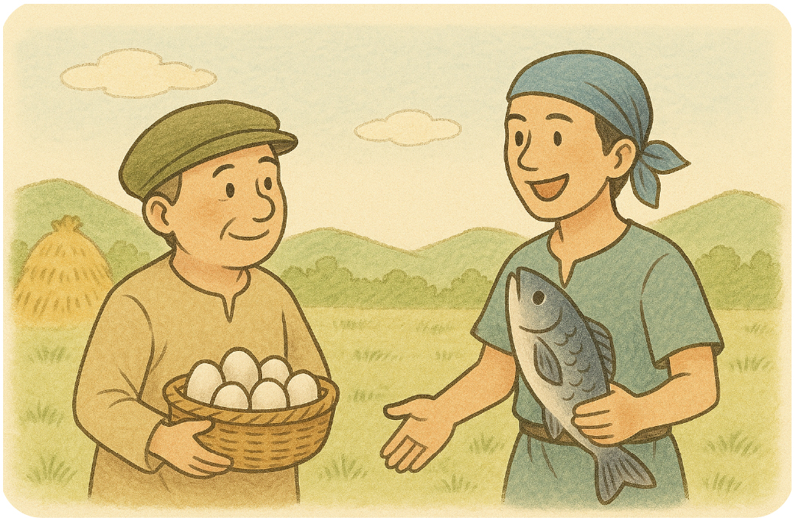
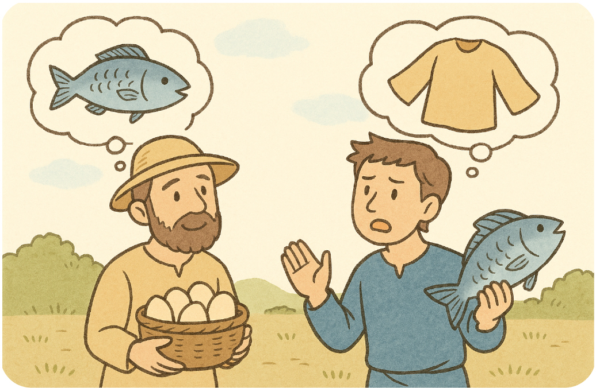
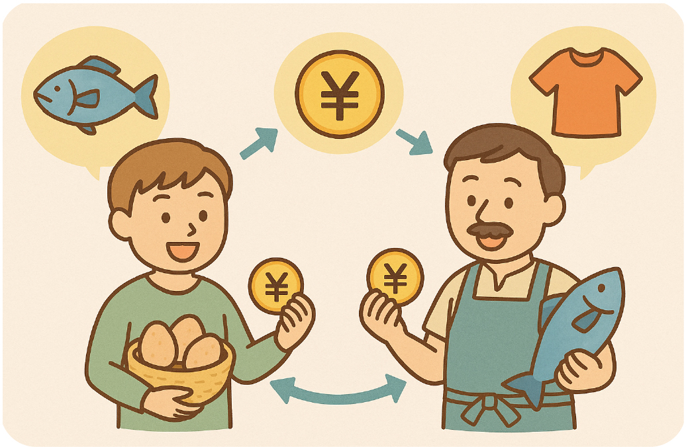
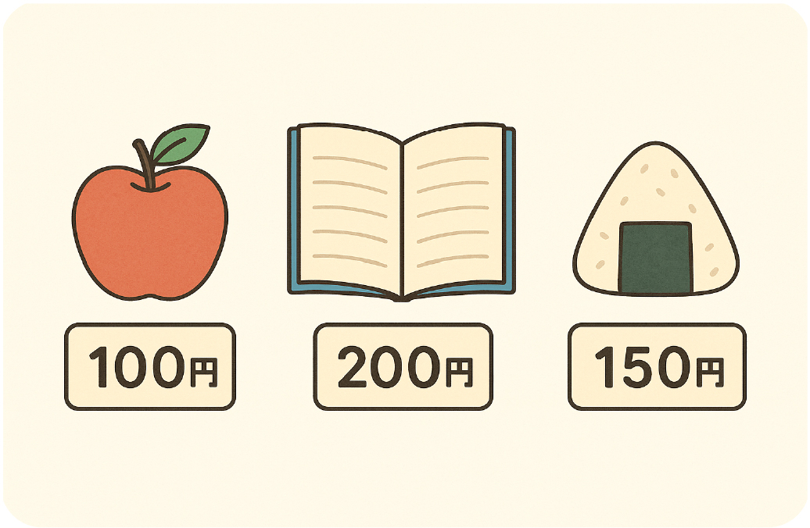
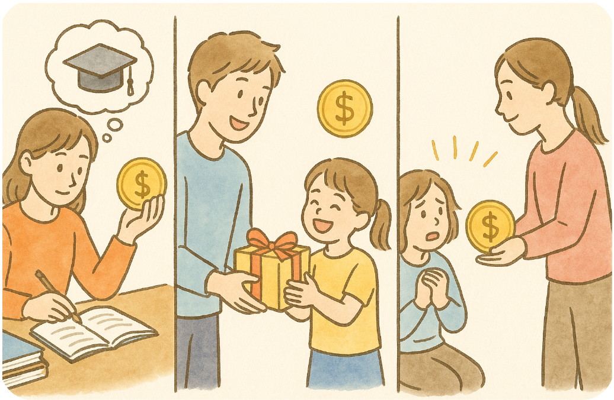
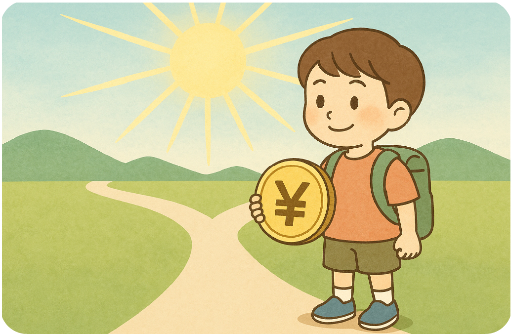
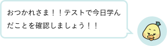

昔むかし、まだ「お金」がなかった時代、人々は「物々交換（ぶつぶつこうかん）」をして生活していました。

たとえば、卵を持っている人が「魚がほしいな」と思ったら、魚をとってきた人に「卵と交換してくれませんか？」と声をかけます。相手が「いいよ！」と言ってくれたら、卵と魚を交換することができます。
でも、こんなときはどうでしょう。

卵の人「魚がほしいな」
魚の人「いや、卵ではなくて服がほしい」
こうなると、たまごの人はまず服を持っている人を探して、たまごと服を交換し、さらにその服を魚の人に渡して魚を手に入れる…というふうに、とても面倒なことになります。
そんな不便を解決するために生まれたのが「お金」です。

お金は、「だれとでも交換できる道具」です。
卵を売ってお金をもらい、そのお金で魚を買う。魚の人も、お金で好きな物を買える。こうすれば、ほしい物を手に入れるために、あちこち歩き回る必要がなくなります。お金のおかげで、やりとりがずっとスムーズになったのです。
さらにお金には、「ものの価値をはかるものさし」としての役目もあります。

りんご1個100円
ノート1冊200円
おにぎり1個150円
といったように、「どれくらいの価値があるか」が数字ではっきりすると、「今日はどれを買おう？」「何に使おうか？」と、自分で選んで決めることができます。これは、「お金で考える力」に繋がります。
しかし、忘れてはいけないのは、お金はあくまで「手段」であり、「道具」にすぎないということです。
そのため、大切なのは、お金そのものではなく、「お金を使ってなにをするか」です。

・勉強や経験にお金を使い、未来に役立てる
・家族や友達にプレゼントを買って、笑顔にする
・困っている人のために募金をする
このように、お金の使い方にはいろいろな可能性があります。
だからこそ、「なんとなく使う」のではなく、「なぜ使うのか？」「何に使うのがいいのか？」をしっかり考えることが大切です。
そして、「お金の使い方」「増やし方」「守り方」を学んでいくことが、“投資”のはじまりになります。
お金は、ただの数字ではなく、思いや選ぶ力をあらわす道具でもあり、その力をどう使うかはあなた次第というわけです。

お金を上手に使える人は、きっとまわりの人の気持ちも大切にできる人です。
増やしたお金をどう使い、どう守っていくか。そんなことを念頭におきながら、これから「投資」について学んでいきましょう。
お金のしくみを知ることで、きっと未来の選択肢が広がっていきます。
まずは、「お金」の基本から、一歩ずつ考えていきましょう！！
